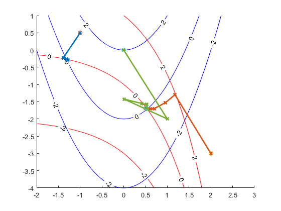

FindRootND
Navigate to: Home | Alphabetic list | Grouped list | Source code: FindRootND.m
Finds multidimensional root of function in N dimensions, without derivatives
Contents
Syntax
[rv, ok, info] = FindRootND(func, x0, opts)
Input Arguments
- func: handle to function with signature rv = func(x), where both rv and x are vectors of same length n
- x0: double vector, with length n. The starting point for the search
- opts: Name-Value pairs
| Name | Type | Value | Meaning |
| 'maxIterations' | positive integer | 100 (default) | max. number of line search iterations |
| 'tolF' | positive double | 1e-8 (default) | max. abs. function value for termination |
| 'tolX' | positive double | 1e-12 (default) | max. abs. or rel. change in any x component for termination |
| 'maxStepX' | positive double | 100 (default) | max. abs. or rel. step in x for line search |
| 'tolMin' | positive double | 1e-12 (default) | tolerance for local minimum detection |
Output Arguments
- rv: double vector of length n. The x value at the root.
- ok: scalar logical. true for success, false for failure
- info: struct with fields fvec (the last function value), msg (a diagnostic string), iter (the number of line search iterations), and history. history is a struct with fields x, fvec, and xRestart. They all are matrices with size (2, iter): the history of x and function values, and the x values where the Jacobian estimate was reset.
Algorithm
Implements Broyden's method (see https://en.wikipedia.org/wiki/Broyden%27s_method, closely following the implementation in Press et al., Numerical Recipes, chapter 9.7.3. This is a quasi-Newton method, where the Jacobian is estimated by simple forward differencing and approximately updated using the function value history. In other words, it is a multidimensional generalization of the secant method.
See also
FindRoot1D, Matlab's fsolve in the Optimization toolbox.
Usage Example
function ExampleFindRootND() figure(); clf; [xx,yy] = meshgrid((-2):0.05:3, (-4):0.05:1); zz1 = arrayfun(@(x,y) ff(x,y,1), xx, yy); zz2 = arrayfun(@(x,y) ff(x,y,2), xx, yy); hold on; contour(xx,yy,zz1,[-2, 0, 2],'r','ShowText','on'); contour(xx,yy,zz2,[-2, 0, 2],'b','ShowText','on'); x0 = [2;-3]; scatter(x0(1), x0(2),'x'); [rv, ok, info] = FindRootND(@f, x0); plot(info.history.x(1,:), info.history.x(2,:), '-x','LineWidth',2) plot(info.history.xRestart(1,:), info.history.xRestart(2,:), 'o') x0 = [0;0]; scatter(x0(1), x0(2),'x'); [rv, ok, info] = FindRootND(@f, x0); plot(info.history.x(1,:), info.history.x(2,:), '-x','LineWidth',2) plot(info.history.xRestart(1,:), info.history.xRestart(2,:), 'o') x0 = [-1;0.5]; scatter(x0(1), x0(2),'x'); [rv, ok, info] = FindRootND(@f, x0); plot(info.history.x(1,:), info.history.x(2,:), '-x','LineWidth',2) plot(info.history.xRestart(1,:), info.history.xRestart(2,:), 'o') end function rv = ff(x, y, i) tmp = f([x;y]); rv = tmp(i); end function rv = f(x) xx = x(1); yy = x(2); rv = [exp(xx) + yy; 2 + yy - xx^2]; end